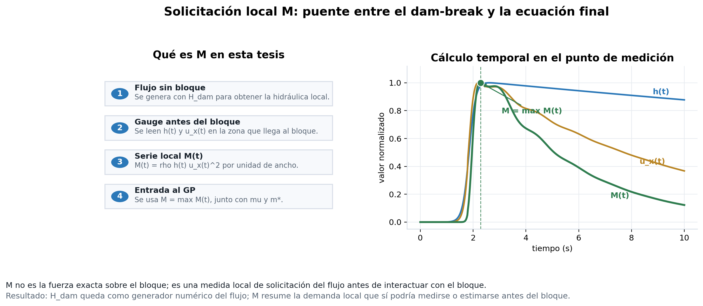

Hidráulica local antes del bloque
Traduccion de la altura dam-break hacia variables hidráulicas medibles y transferibles para la ecuación final.
Variable hidráulica transferible
La altura inicial H_dam genera el flujo numérico, pero no es una variable transferible para una ecuación final. Por eso se reexpresa cada caso mediante variables medidas antes del bloque: profundidad local h(t), velocidad longitudinal u_x(t), número de Froude y solicitación local M = max_t[rho h(t) u_x(t)^2].
Lectura clave:
M resume el flujo de momentum por unidad de ancho en la sección local antes del bloque. No es la fuerza exacta sobre el bloque; es una entrada hidráulica transferible para comparar escenarios.- Caracterizacion
- 14 casos sin bloque y con bloque de referencia
- Entrada principal
- M max rho h(t) u_x(t)^2
- Medición
- gauge local antes del bloque
- Uso
- modelo local entrada transferible
Evidencia hidráulica
